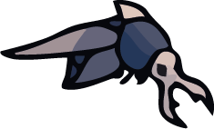
Crossroads
Reproductor de música
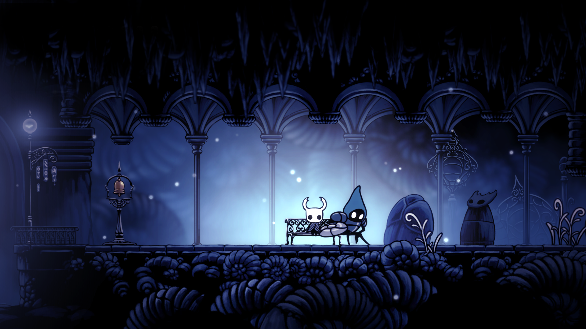
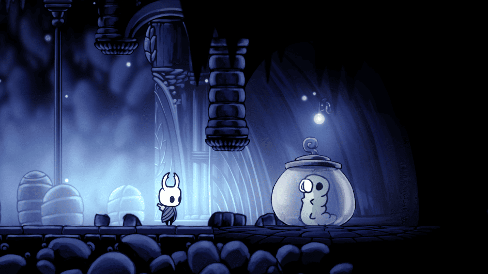
Estas carreteras antaño eran concurridas por viajeros de todo Hallownest.
Pero tras muchos años el deterioro, las plagas de bichos agresivos y los restos de antiguos habitantes, las han transformado en una zona peligrosa.
Cruces Olvidados es un lugar que ha sido testigo del declive de Hallownest. Antes de la Infección, las rutas estaban activas y seguras, pero la decadencia del reino y la expansión de la plaga la convirtieron en una zona de peligro.
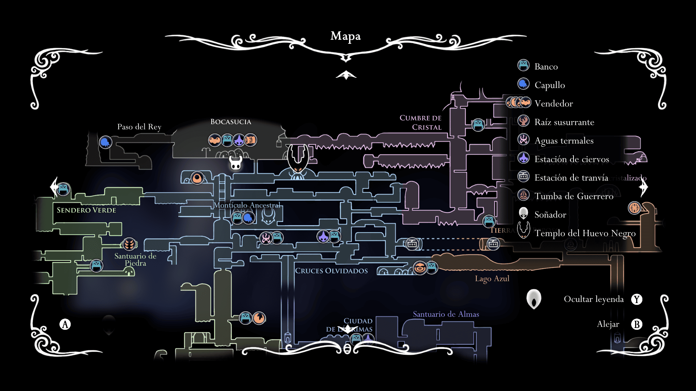
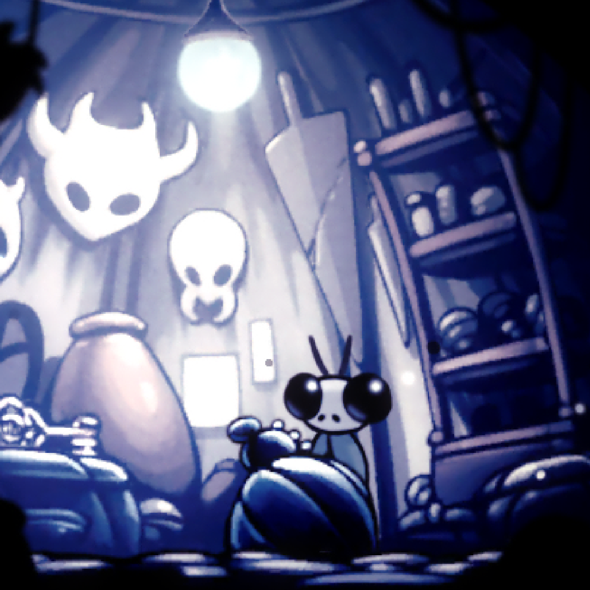
Soy Sly. Normalmente llevo una vida tranquila en Bocasucia.
El aire de estas ruinas no me va bien, así que mejor vuelvo a casa. Si vuelves arriba, ven a verme.
Probablemente sea la cara más amable que puedas encontrarte y te agradeceré apropiadamente tu buena acción.
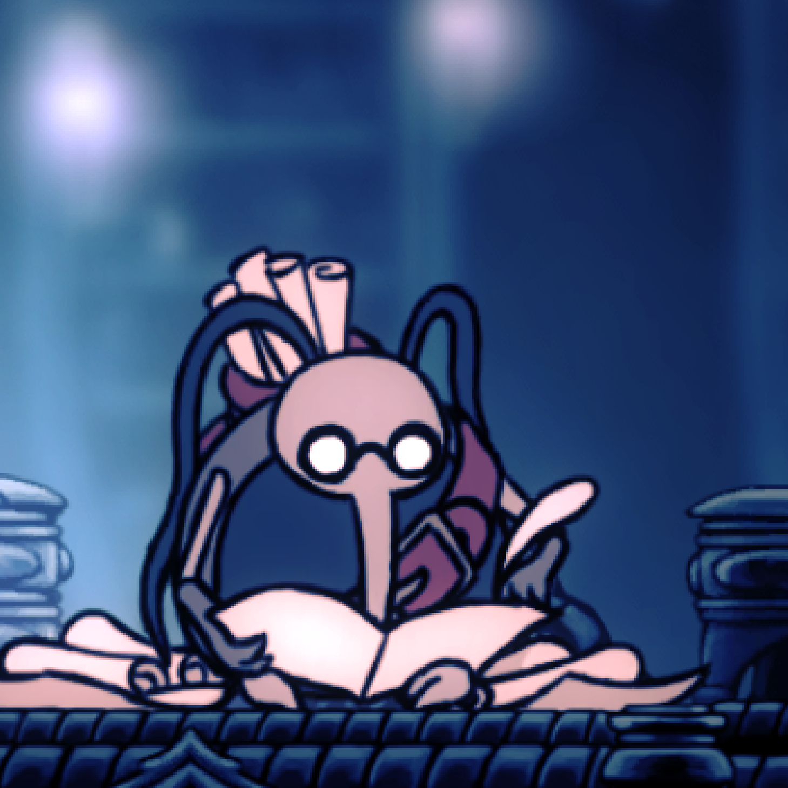
Hmm? Ah, hola. ¿Has venido a explorar estas preciosas aunque viejas ruinas? Si es así, ignórame. Me encanta explorar. Perderse y volver a encontrar el camino es un placer como ningún otro. Tú y yo tenemos una suerte increíble. Soy cartógrafo, y ahora mismo estoy dibujando esta zona.
¿Te gustaría comprar lo que llevo hasta ahora?.
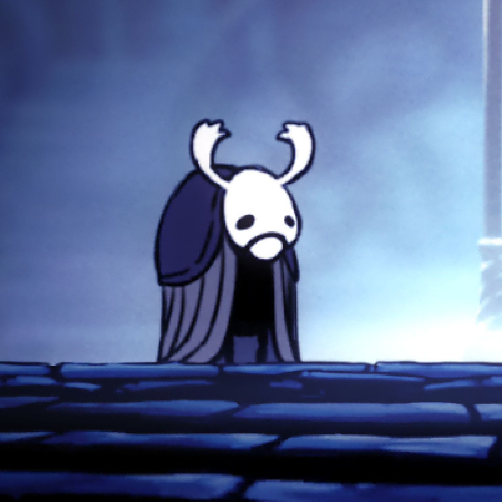
Hola, viajero. Me temo que solo quedamos yo para darte la bienvenida. Nuestro pueblo se quedó bien callado, ya ves. Los demás habitantes desaparecieron. Bajaron por ese pozo, uno por uno, hacia las cavernas de abajo.
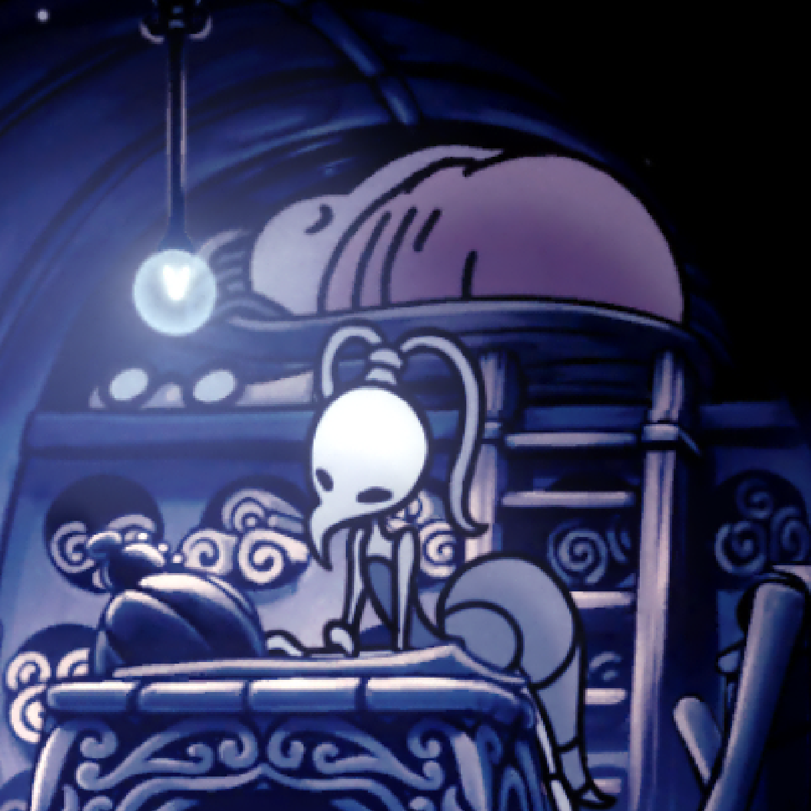
Cornifer siempre anda tan metido en su trabajo que se olvida de todo lo demás... hasta de volver a casa a dormir. Al menos los mapas que hace sí son bastante buenos, así que supongo que no me puedo quejar.
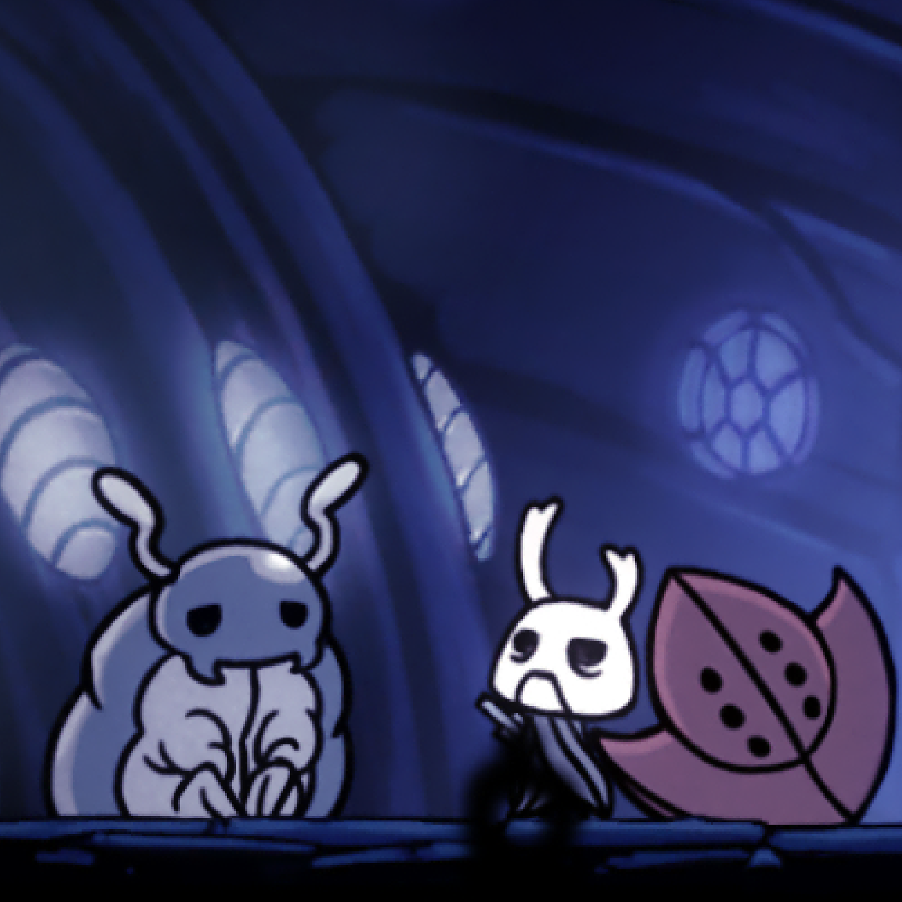
¡Aparta, bestia asquerosa! ¡Enfrenta la furia de Zote el Poderoso, portador de Termina-Vida!
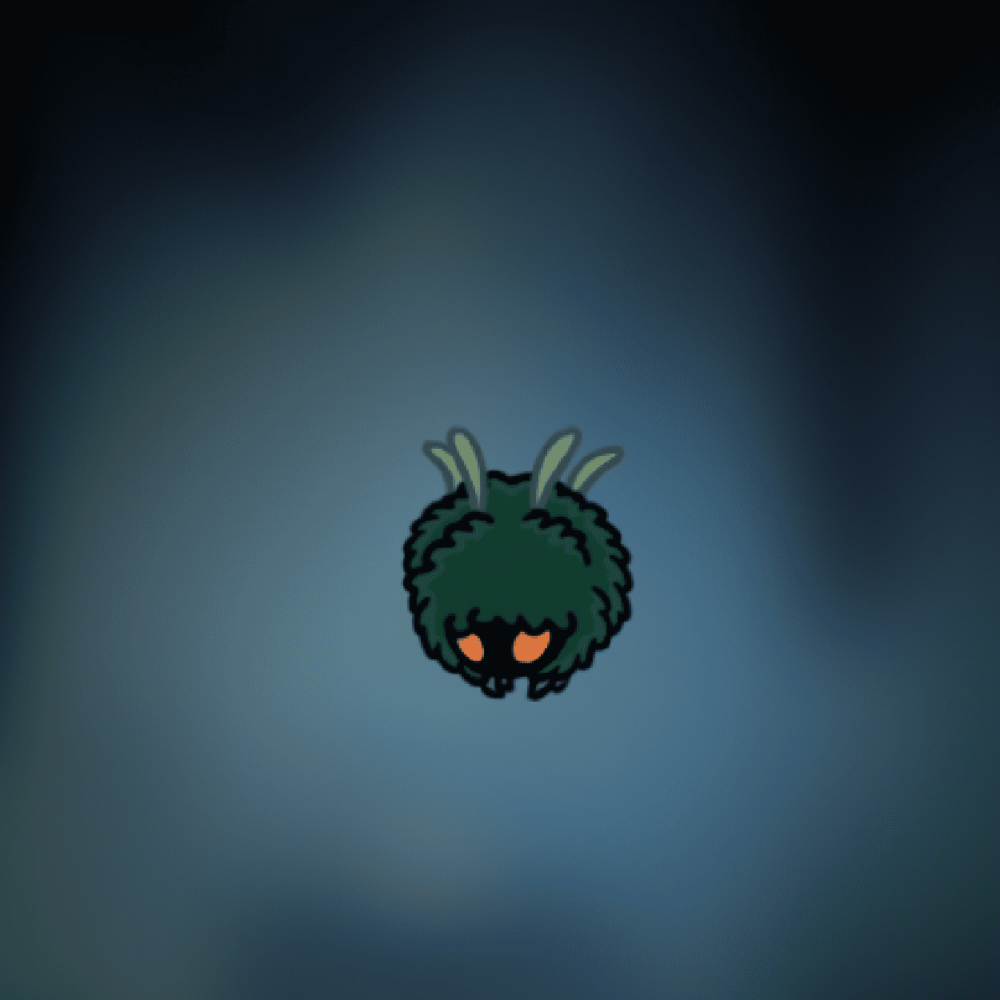
A veces es difícil detectarlo entre el follaje. Cuando menos te lo esperas aparece a tu lado y carga todo contra ti.
Residencia del Chamán Caracol, quien otorga al jugador el hechizo Espíritu vengativo a cambio de un favor. Tras conseguir el hechizo, el jugador podrá cruzar hacia Sendero Verde matando al Baldur anciano que protege la entrada.
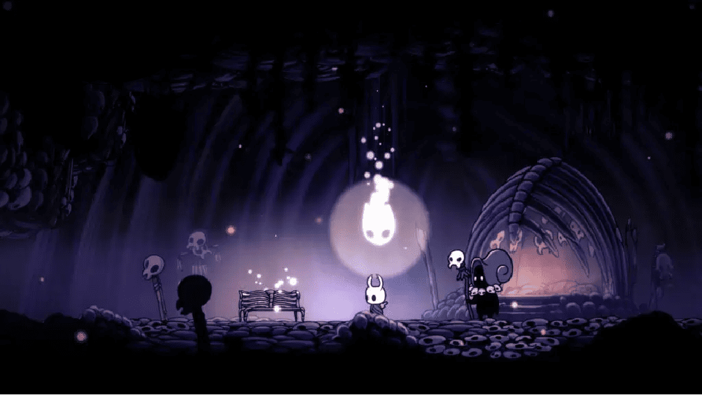
Los Cruces Infectados son la versión transformada de los Cruces Olvidados que aparece cuando obtienes las Alas de Monarca o derrotas a uno de los Soñadores, causando que la infección se expanda y que los enemigos se vuelvan más fuertes y explosivos.
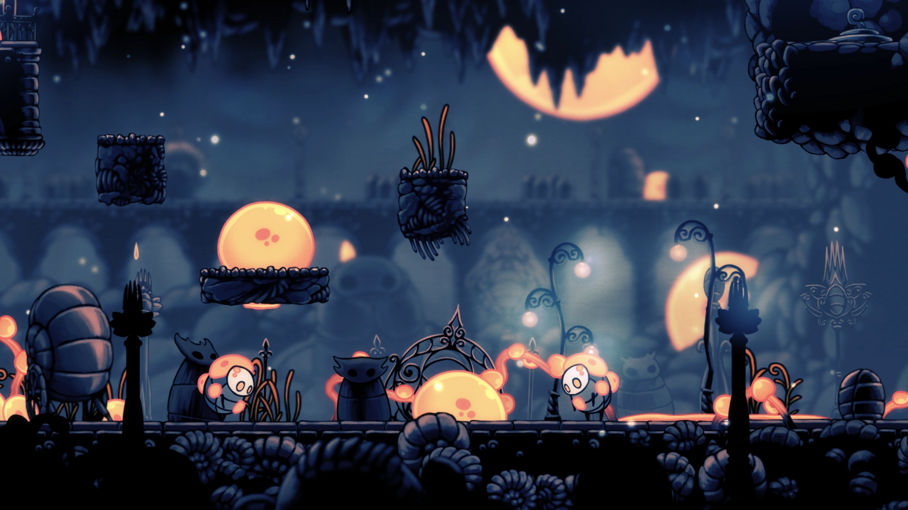